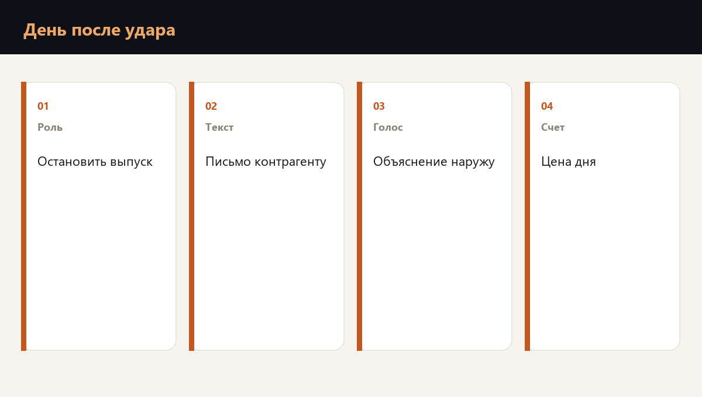

Самый дорогой разговор после удара по площадке случается не с журналистом. Он случается с заказчиком, который спрашивает, когда машина все-таки приедет.
Ответ в это утро должен быть один. Одна дата в одном письме. Второе письмо в тот же день эту дату не переносит. Пока даты нет, каждый следующий день стоит компании ее обычный день простоя. В опубликованном логистическом разборе такой день вышел около 180 тысяч рублей. Новая дата в течение дня эту сумму не уменьшает: она только отодвигает обещание.

Кто имеет право решать в это утро
До события на бумаге стоят роли, и у каждой роли есть имя. Кто останавливает смену. Кто имеет право назвать заказчику новую дату, и в каких пределах. Кто пишет поставщику сырья и подрядчику. Кто говорит, если о событии спрашивают публично.
Имя, которое появляется первый раз в это утро, уже опоздание. Пока ищут, кто имеет право обещать, машины стоят, а заказчик слышит несколько разных версий от нескольких людей.
Что уходит поставщику, заказчику и в публичный текст
Поставщик сырья должен узнать о паузе раньше, чем его машина уже стоит у закрытых ворот. В письме три ясные вещи: отгрузка или прием остановлены, какая именно площадка закрыта, когда придет следующее сообщение.
Заказчик получает одну дату и понятное объяснение, какая часть заказа еще может уехать. Публичный текст повторяет те же факты. Причину, которой у компании еще нет, в это утро не объявляют. Достаточно факта остановки, того, какой поток встал, и часа следующего сообщения.
- Поставщику. Пауза, какая приемка закрыта, когда ждать следующее письмо.
- Заказчику. Одна дата и какая часть заказа еще едет.
- Публично. Те же факты, что в письме заказчику, без причины, которой компания не располагает.
Где полис заканчивается и начинается письмо
Если полис простоя есть, он платит по своим правилам и после своих документов. Дату для заказчика в это утро он не выбирает. Письмо пишет компания, из текста, заготовленного заранее.
Письма уходят в тот же день. Выплата, если она приходит, приходит позже. Какую долю выпуска еще можно обещать, решает человек, чье имя записано до утра.
Роли, тексты и цену дня для одной площадки записывают на проверке готовности к атаке БПЛА.
Частые вопросы
Только человек, которого назвали до этого дня, и только в пределах, которые записаны рядом с его именем. Остальные могут сообщить факты. Дату они не двигают.
Что остановка произошла, какой поток встал и когда придет следующее сообщение. Причину, которой нет, не объявляют.
Нет. Страховая платит после своих документов. Письмо пишет компания.
Готова ли команда к первому часу кризиса
Планы проверяются не чтением, а сценарием. Диагностика покажет пробелы, корпоративный формат отрабатывает их с вашей командой на ваших процессах.